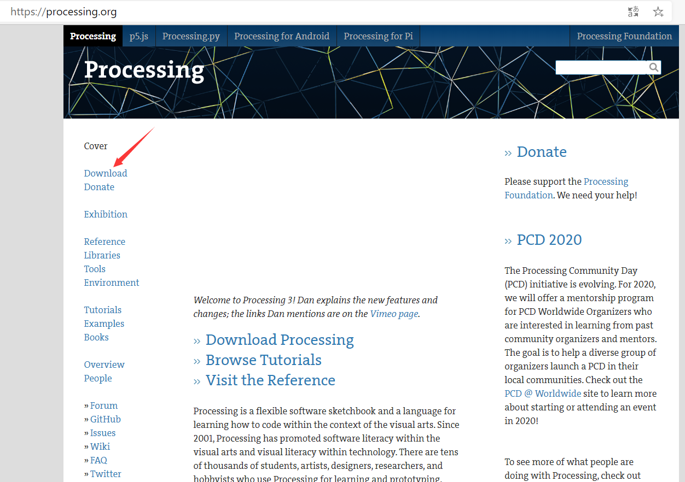
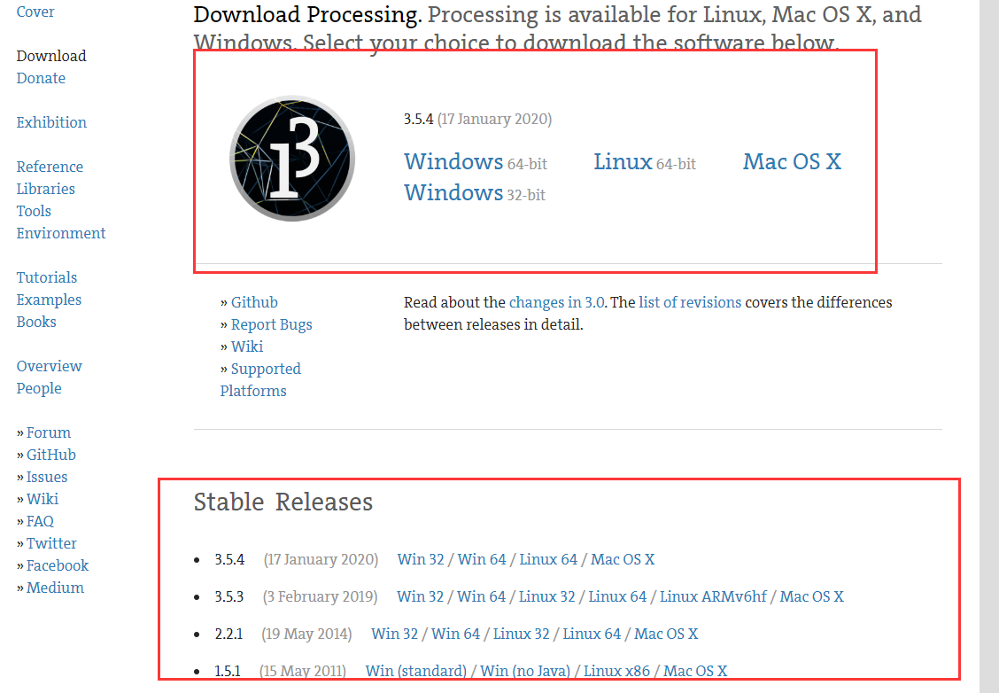
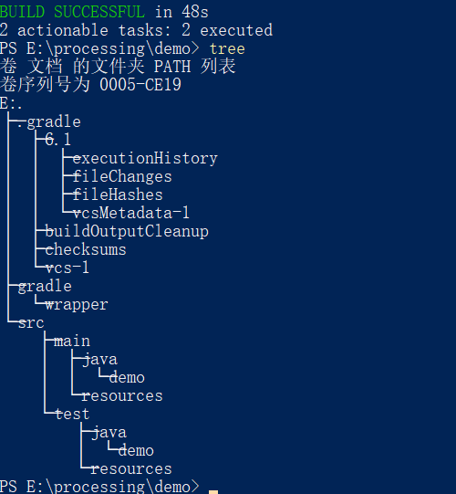
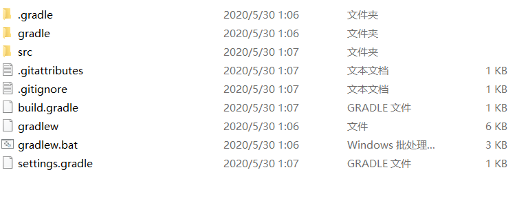
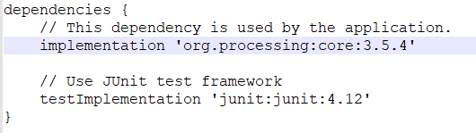
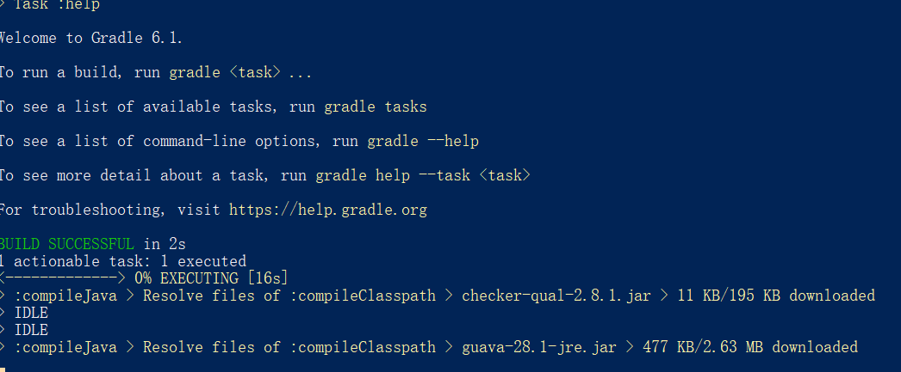
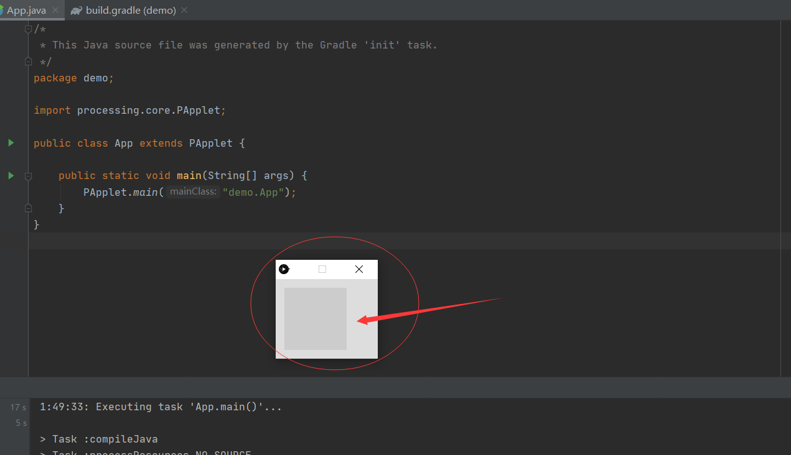

processing入门0
processing用途：可以说是java绘图方面的一个拓展和延伸，现在多用于艺术创作，图形绘画多媒体方面
processing开发环境搭建：由于是processing是用java开发的，是java一个类库的延伸，可以直接用IDEA,VSCode等java集成开发环境开发，同样也可以用processing官方的PDE开发
processing官方开发环境PDE安装简单，到官网下载https://processing.org/，

点击Download,

然后下载合适的系统版本，然后解压按即可，下载后解压到想安装的目录，下面以Windows系统为例子

无需安装，点processing.exe就可以直接运行集成开发环境PDE,界面如下图所示

下面介绍用idea和Gradle搭建processing开发环境,此处假定Gradle已经安装配置完毕
复习一下，用Gradle从零开始构建java程序
打开gradle官方文档https://guides.gradle.org/building-java-applications/
选择一个没有空格和中文名称的文件夹，打开cmd，或终端工具
1
2$ mkdir demo
$ cd demogradle初始化文件夹，按照提示一步一步就初始化完毕了
1
2
3
4
5
6
7
8
9
10
11
12
13
14
15
16
17
18
19
20
21
22
23
24
25
26
27
28
29
30
31
32
33
34
35
36
37
38
39
40$ gradle init
> Task :wrapper
Select type of project to generate:
1: basic
2: application
3: library
4: Gradle plugin
Enter selection (default: basic) [1..4] 2
Select implementation language:
1: C++
2: Groovy
3: Java
4: Kotlin
5: Swift
Enter selection (default: Java) [1..5] 3
Select build script DSL:
1: Groovy
2: Kotlin
Enter selection (default: Groovy) [1..2] 1
Select test framework:
1: JUnit 4
2: TestNG
3: Spock
4: JUnit Jupiter
Enter selection (default: JUnit 4) [1..4]
Project name (default: demo):
Source package (default: demo):
> Task :init
Get more help with your project: https://docs.gradle.org/5.4.1/userguide/tutorial_java_projects.html
BUILD SUCCESSFUL
2 actionable tasks: 2 execute此时其实已经初始化完毕，查看项目目录

文件夹如下图所示

此时可以继续按照文档的提示步骤继续配置，或者直接用IDEA或者VSCode打开这个项目，我这里选择用继续配置依赖，编辑build.gradle，添加最重要的依赖
1
2implementation 'org.processing:core:3.3.7'
//3.3.7比3.5.4下载更快
build.gradle配置如下
1
2
3
4
5
6
7
8
9
10
11
12
13
14
15
16
17repositories {
// Use jcenter for resolving dependencies.
// You can declare any Maven/Ivy/file repository here.
//jcenter()
maven {
url 'http://maven.aliyun.com/nexus/content/groups/public/'
}
}
dependencies {
// This dependency is used by the application.
implementation 'com.google.guava:guava:28.1-jre'
//processing dependency
implementation 'org.processing:core:3.3.7'
// Use JUnit test framework
testImplementation 'junit:junit:4.12'
}
下载依赖，执行
gradle build,可以看到在下载依赖
构建成功后用IDEA打开项目
删除App.java里面的内容，将App.java修改成如下所示
1
2
3
4
5
6
7
8
9
10
11package demo;
import processing.core.PApplet;
public class App extends PApplet {
public static void main(String[] args) {
PApplet.main("demo.App");
}
}
运行main方法，出现如下所示，说明基础开发环境配置完毕

上面就是processing的绘图面板，后面的开发将用VSCode开发，VSCode编译较快，IDEA显得过于大材小用，臃肿
下一章将是processing基础1—代码结构